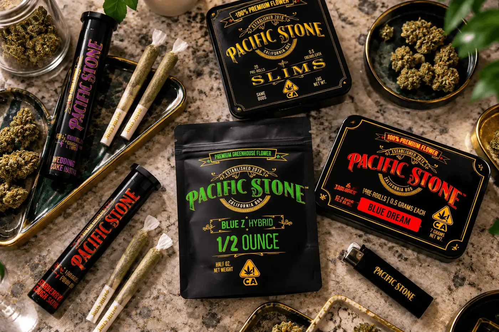

Pacific Stone Strains San Diego: Blue Dream, Wedding Cake, 805 Glue & More
October 7, 2026 · 14 min read

Are you interested in Pacific Stone strains in San Diego but not sure which strain or product to choose? We can help make things simpler. Pacific Stone is known for California-grown flower and pre-rolls, including familiar strains like Blue Dream, Wedding Cake, and 805 Glue. At Wellgreens, you can find selected Pacific Stone cannabis products across our San Diego County stores, with options ranging from traditional flowers to convenient pre-roll packs.
In this guide, we’ll introduce you to Pacific Stone, take a closer look at some of its popular strains, explain the difference between flower and pre-rolls, and show you how to find current products near you. You do not need to know every cannabis term before you start. We’ll keep everything easy to understand so you can make a more informed choice.
TLDR Quick Guide to Pacific Stone
New to Pacific Stone? Here is the simple version. Pacific Stone is a California cannabis brand founded in 2015 and based in Carpinteria in Santa Barbara County. The brand specializes in greenhouse-grown cannabis and is especially known for its flower and pre-rolls.
At Wellgreens, some of the Pacific Stone products you may come across include:
- Blue Dream: Available in selected flower, Sugar Shake, and 14-pack pre-roll formats.
- Wedding Cake: Available in selected flower, Sugar Shake, 2-pack pre-rolls, and 14-pack pre-rolls.
- 805 Glue: Available in selected flower, Sugar Shake, 2-pack pre-rolls, and 14-pack pre-rolls.
- Other Pacific Stone strains: Selection can change as new products arrive and individual stores update their inventory.
- 10 Wellgreens locations: Pacific Stone products can be found at selected Wellgreens stores throughout San Diego County.
- Delivery: Selected products may also be available for delivery depending on your address and current inventory.
The easiest place to start is our Pacific Stone collection. Since cannabis inventory changes frequently, we also recommend that you check current availability before heading to a store for a particular strain.
What Is Pacific Stone Cannabis?
Pacific Stone is a California cannabis company founded in 2015 by a Central Coast family collective. The company is based in Carpinteria, Santa Barbara County, where its cannabis is grown in full-sun greenhouses.
Instead of growing entirely indoors, Pacific Stone combines natural sunlight with the controlled conditions of greenhouse cultivation. According to the brand information provided to Wellgreens, this growing approach uses about 40% less energy than indoor cultivation. After harvesting, its flower goes through a climate-controlled drying and curing process before being hand-finished.
Pacific Stone focuses heavily on two familiar cannabis formats: flower and pre-rolls. That makes the brand relatively easy to explore, even if you are still learning about cannabis products. Rather than having to compare many completely different product types, you can start by deciding which strain interests you and whether you would rather have loose flowers or something already rolled.
You can see the Pacific Stone products currently featured by Wellgreens on our Pacific Stone brand page.

What Makes Pacific Stone Different?

With so many cannabis brands available in California, it is reasonable to wonder why shoppers look for Pacific Stone specifically. Part of the answer comes down to how the brand grows, prepares, and packages its cannabis.
Pacific Stone describes its approach as a way to combine greenhouse cultivation with careful post-harvest handling. Some notable details include:
- Greenhouse-grown cannabis: Pacific Stone uses California sunlight along with a controlled greenhouse environment.
- Climate-controlled drying: Harvested cannabis goes through an extended drying process before curing.
- Hand-finished trimming: The brand uses hand-finishing instead of relying completely on mechanical processing.
- Full-nug pre-rolls: Pacific Stone states that its pre-rolls use ground full-nug flower rather than shake or trim.
- Several package sizes: Depending on the strain, products can include smaller flower packages, larger flower options, 2-pack pre-rolls, and 14-pack pre-rolls.
If terms like flower quality, freshness, and packaging are still new to you, our guide to fresh cannabis flowers explains what to look for in an easy-to-understand way.
Popular Pacific Stone Strains in San Diego

If you have already searched for Pacific Stone online, you have probably seen names such as Blue Dream, Wedding Cake, and 805 Glue. These are also some of the Pacific Stone strains shoppers are searching for around San Diego.
Choosing between them does not have to be complicated. Instead of focusing only on whether a strain is labeled sativa, indica, or hybrid, look at the actual product information too. The strain, cannabinoid content, terpene profile, package size, and format can all help you compare your options.
Here are three Pacific Stone strains worth knowing about.
Pacific Stone Blue Dream
Pacific Stone Blue Dream is one of the most searched products from the brand, and it is available in several formats at Wellgreens when in stock.
Pacific Stone labels Blue Dream as a sativa. If you are completely new to cannabis, remember that labels such as sativa and indica are only one part of understanding a product. The actual cannabinoid and terpene information printed on the package can give you more details about that particular batch.
At Wellgreens, Pacific Stone Blue Dream has been offered as:
- Blue Dream Flower 3.5g
- Blue Dream Sugar Shake Flower 14g
- Blue Dream 14-Pack Pre-Rolls 7g
These different formats make Blue Dream easier to explore based on how you prefer to buy cannabis. The 3.5g option is traditional loose flower, while the 14-pack provides multiple ready-made pre-rolls. Sugar Shake is another flower format and should not be confused with standard full buds.
If you have been searching for Pacific Stone Blue Dream in San Diego or wondering where to buy Pacific Stone Blue Dream, start with our complete guide to Pacific Stone Blue Dream. You can then check the live menu to see whether the product you want is currently available near you.

Pacific Stone Wedding Cake
Pacific Stone Wedding Cake is another popular name in the brand’s San Diego selection. Pacific Stone labels its Wedding Cake as an indica, and Wellgreens has carried it in both flower and pre-roll formats.
Depending on current inventory, you may see:
- Wedding Cake Flower 3.5g
- Wedding Cake Sugar Shake Flower 14g
- Wedding Cake 2-Pack Pre-Rolls 1g
- Wedding Cake 14-Pack Pre-Rolls 7g
The variety of formats is helpful because not everyone wants to buy cannabis in the same way. Someone looking for traditional flowers may prefer the 3.5g package, while someone looking for ready-made joints may find the Pacific Stone pre-roll options more convenient.
If you are searching for Pacific Stone Wedding Cake in San Diego, you can learn more in our guide to Pacific Stone Wedding Cake. From there, check current store inventory before visiting, especially if Wedding Cake is the specific strain you want.
Pacific Stone 805 Glue
Another strain you are likely to see when exploring the brand is Pacific Stone 805 Glue. Pacific Stone labels 805 Glue as a hybrid, and it is one of the brand’s strains offered in several different formats through Wellgreens.
Our Pacific Stone selection has included:
- 805 Glue Flower 3.5g
- 805 Glue Flower 14g
- 805 Glue Sugar Shake Flower 14g
- 805 Glue 2-Pack Pre-Rolls 1g
- 805 Glue 14-Pack Pre-Rolls 7g
That variety is useful if you already know you are interested in 805 Glue but are deciding how you want to buy it. You can choose a traditional flower, a larger flower package when available, Sugar Shake, or ready-made pre-rolls.
Pacific Stone has also created its own guide explaining where to find Pacific Stone 805 Glue at Wellgreens in San Diego. It is a useful next stop if 805 Glue is the specific Pacific Stone strain you are trying to find.
Because cannabis inventory changes, we recommend checking availability rather than assuming every format will be at every store. A Pacific Stone 805 Glue product that is available today at one Wellgreens location may not be available at another.

What About Pacific Stone Cereal Milk?

You may also come across searches for Pacific Stone Cereal Milk while exploring the brand. Cereal Milk is another strain associated with Pacific Stone, but our Wellgreens selection can change over time and not every Pacific Stone strain will necessarily be available at every location.
This is an important distinction when searching online. A brand may produce a strain without that exact product being in stock at the dispensary closest to you. The same applies to other Pacific Stone strains you may have heard about, such as Strawberry Cough.
Instead of making a special trip based on an older product page or search result, use our current product availability page first. It will give you a better idea of what is actually available through Wellgreens when you are ready to shop.
Pacific Stone Flower, Shake, or Pre-Rolls?

One of the easiest ways to narrow down Pacific Stone products is to decide which format makes the most sense to you. You may see flower, Sugar Shake, and Pacific Stone pre-rolls while browsing, and those terms do not mean exactly the same thing.
Pacific Stone Flower
Flower refers to the harvested cannabis buds that have been dried, cured, and packaged. It gives you flexibility because you can prepare the amount you want rather than receiving an already rolled product.
Traditional flower may be worth considering if you:
- Prefer to prepare cannabis yourself
- Want more control over how much you use at once
- Like seeing and smelling the flower before preparing it
- Already have the accessories needed for loose flower
If you are not sure what separates one flower product from another, read our beginner-friendly guide on how to choose cannabis flower.
You can also browse the current cannabis flower selection at Wellgreens Encinitas.

Pacific Stone Sugar Shake
You may have noticed Pacific Stone Shake or Sugar Shake while looking through the menu. Shake is loose cannabis material that is different in appearance from packages made up primarily of intact flower buds.
Pacific Stone Sugar Shake is available in larger formats for some strains, including Blue Dream, Wedding Cake, and 805 Glue when in stock. If you are deciding between shake and regular flower, pay attention to the exact product name and package description so you know what you are buying.
This is also why it is helpful not to judge products only by the strain name. Two packages can both say Blue Dream while containing different formats or quantities.
Pacific Stone Pre-Rolls
Pre-rolls are cannabis that has already been ground and rolled, so you do not have to prepare a joint yourself. Pacific Stone says its pre-rolls are made with full-nug flowers rather than relying on shake or trim.
At Wellgreens, we have carried Pacific Stone pre-rolls in formats such as:
- 2-Pack Pre-Rolls 1g
- 14-Pack Pre-Rolls 7g
The larger Pacific Stone 14-pack pre-rolls may be useful for shoppers who already know the strain they want and prefer a multi-pack. Smaller packs provide another option when available.
If you are searching for Pacific Stone pre-rolls near me, remember that inventory is location-specific. Checking the Wellgreens menu before visiting is the most reliable way to see which strain, package size, and format are currently available.

How to Choose a Pacific Stone Strain

Not sure whether Blue Dream, Wedding Cake, 805 Glue, or another Pacific Stone product makes sense for you? You do not need to pick based on the strain name alone.
A few simple questions can make comparing products much easier.
Start with the format. Do you want a traditional flower that you prepare yourself, or would you rather have pre-rolls that are already prepared? Deciding this first can quickly narrow the menu.
Look at the product label. Cannabis can vary from batch to batch. The package provides more current information about the specific product you are considering, including cannabinoid content and other required details.
Check the terpene profile. Terpenes are naturally occurring aromatic compounds found in cannabis and many other plants. They help give different strains their distinctive aromas. If the terminology seems complicated, our guide on how to read terpene profiles explains the basics.
Think about package size. A 3.5g flower package is very different from 14g of Sugar Shake or a 14-pack of pre-rolls. Look beyond the strain name and make sure you understand the amount and format listed.
Ask questions if you are unsure. You do not have to walk into a dispensary already knowing exactly what every label means. Our team can help explain the products available and answer questions about the menu.
Where to Find Pacific Stone in San Diego

If you have searched “Pacific Stone near me”, the good news is that you have several Wellgreens locations to check across San Diego County.
You can find our stores at:
- Wellgreens Pacific Beach Weed Cannabis Dispensary
4645 De Soto St., San Diego, CA 92109 - Wellgreens Mission Valley Cannabis Dispensary
3703 Camino del Rio South, Unit 215-A, San Diego, CA 92108 - Wellgreens Kearny Mesa Weed Cannabis Dispensary
8039 Balboa Ave, Suite A, San Diego, CA 92111 - Wellgreens City Heights Weed Cannabis Dispensary
4333 Home Avenue, San Diego, CA 92105 - Wellgreens Encinitas Weed Cannabis Dispensary
211 N El Camino Real, Encinitas, CA 92024 - Wellgreens Weed Dispensary La Mesa: University Ave
7180 University Avenue, La Mesa, CA 91942 - Wellgreens La Mesa: Lake Murray Rd Cannabis Weed Dispensary
5301 Lake Murray Boulevard, La Mesa, CA 91942 - Wellgreens Lemon Grove Weed Dispensary
6859 Federal Boulevard, Lemon Grove, CA 91945 - Wellgreens Vista Cannabis Weed Dispensary
954 S. Santa Fe Avenue, Vista, CA 92084 - Wellgreens Chula Vista Weed Cannabis Dispensary
1214 Broadway, Chula Vista, CA 91911
Pacific Stone inventory can vary between our locations. For example, finding Pacific Stone Blue Dream at our Encinitas store does not necessarily mean the same flower or pre-roll package is currently available in Pacific Beach, Vista, or Chula Vista.
Before heading to your preferred location, check what’s currently in stock or browse our Pacific Stone products. If you would like to compare Pacific Stone with other options, you can also browse the cannabis brands we carry.
Pacific Stone Delivery in San Diego

What if you find the Pacific Stone product you want but would rather have your order delivered? Wellgreens offers cannabis delivery across selected San Diego areas, and Pacific Stone products may be available for delivery when they are stocked by the hub serving your address.
Our current delivery coverage includes parts of:
- Encinitas
- Carlsbad
- Del Mar
- Solana Beach
- Rancho Santa Fe
- Oceanside
- Vista
- San Marcos
- Escondido
- La Mesa
- El Cajon
- Santee
- Downtown San Diego
- Gaslamp Quarter
- Little Italy
- North Park
- Hillcrest
- Mission Valley
- Other eligible San Diego neighborhoods
Delivery inventory can be different from what you see at a nearby physical store. Enter your delivery information and check the current menu to find out what is available for your address.
Whether you are searching for Pacific Stone Blue Dream, Pacific Stone Wedding Cake, Pacific Stone 805 Glue, or Pacific Stone pre-rolls, checking live availability is the easiest way to avoid guessing. If you still have questions about finding a product, you can contact our Wellgreens team for help.
Key Takeaways: Pacific Stone Strains in San Diego
Pacific Stone gives San Diego shoppers several familiar strains and formats to explore without making the process overly complicated. Blue Dream, Wedding Cake, and 805 Glue are some of the key strains you may see at Wellgreens, while exact products and quantities depend on current inventory.
Here are the main things to remember:
- Pacific Stone Blue Dream has been available at Wellgreens as flower, Sugar Shake, and 14-pack pre-rolls.
- Pacific Stone Wedding Cake has been offered as a flower, Sugar Shake, 2-pack pre-rolls, and 14-pack pre-rolls.
- Pacific Stone 805 Glue has appeared in flower, Sugar Shake, and multiple pre-roll formats.
- Pacific Stone focuses on greenhouse-grown California cannabis, including flower and pre-roll products.
- Flower, shake, and pre-rolls are different formats, even when they share the same strain name.
- Product availability varies between Wellgreens locations and can change over time.
- Wellgreens has 10 locations across San Diego County, giving shoppers several places to look for Pacific Stone.
- Delivery is available in selected North County, East County, and San Diego metro service areas.
The best Pacific Stone product for you depends on what is currently available and what type of product you prefer. Browse our Pacific Stone selection, compare the current menu, and ask our team if you need help understanding the differences.
FAQs About Pacific Stone Strains in San Diego
01Where can I find Pacific Stone strains in San Diego?
Wellgreens carries selected Pacific Stone products across its San Diego County dispensary network. We have 10 locations, including stores in Pacific Beach, Mission Valley, Kearny Mesa, City Heights, Encinitas, La Mesa, Lemon Grove, Vista, and Chula Vista. Inventory is different from store to store and can change as products sell out or new items arrive. We recommend using our availability checker before visiting for a specific Pacific Stone strain.
02Do Wellgreens carry Pacific Stone Blue Dream?
Wellgreens has carried Pacific Stone Blue Dream in several formats, including 3.5g flower, 14g Sugar Shake, and 14-pack pre-rolls. The exact options available will depend on the location and current inventory. You can learn more about the strain in our Pacific Stone Blue Dream guide. Check the current menu before visiting if Blue Dream is the particular Pacific Stone product you want.
03Where can I buy Pacific Stone Wedding Cake in San Diego?
Pacific Stone Wedding Cake is available through selected Wellgreens locations when in stock. We have carried Wedding Cake as a 3.5g flower, 14g Sugar Shake, 2-pack pre-rolls, and 14-pack pre-rolls. Read our Pacific Stone Wedding Cake guide if you want to learn more before choosing a format. Since inventory changes frequently, confirm availability at your preferred Wellgreens location before heading over.
04What is the difference between Pacific Stone flower and pre-rolls?
Pacific Stone flower comes as loose cannabis that you prepare yourself, while pre-rolls arrive already rolled. Pacific Stone states that its pre-rolls contain full-nug flowers rather than being made only with shake or trim. Which format makes more sense depends mainly on how you prefer to purchase and prepare cannabis. Always check the package size as well because Pacific Stone products are available in different quantities.
05Can I get Pacific Stone delivered in San Diego?
Pacific Stone products may be available for delivery if they are currently stocked by the Wellgreens delivery hub serving your address. Wellgreens provides same-day delivery to eligible areas across North County, East County, and San Diego metro neighborhoods. You can visit our San Diego cannabis delivery page to check coverage and browse the current menu. Because inventory varies by delivery area, confirm the specific Pacific Stone strain and format during checkout.
Important Notice

Cannabis is for adult use only. Recreational purchases require customers to be 21+ with valid identification, or 18+ with a valid medical recommendation where applicable. Keep cannabis products out of reach of children and pets. Product selection and availability are subject to change.
Shop this guide
Keep reading

Why Is Your Cake Disposable Vape Not Hitting and What Should You Check?
You pick up your Cake disposable vape, take a draw, and… nothing. No vapor, no response, just a device that seems to have called it quits…

Cannabiotix Flower vs Concentrates: Which Product Type Fits Your Needs?
If you’re comparing Cannabiotix flower vs concentrates, you’ve probably noticed that both categories offer distinct characteristics, from…

Live Rosin vs Live Resin: Which Concentrate Should You Choose?
Two cannabis concentrates. Similar names. Very different production methods. If you’ve been comparing live rosin vs…
Ready to Start?
Premium cannabis. Expert guidance. Fast pickup. Join thousands of San Diegans who trust Wellgreens.